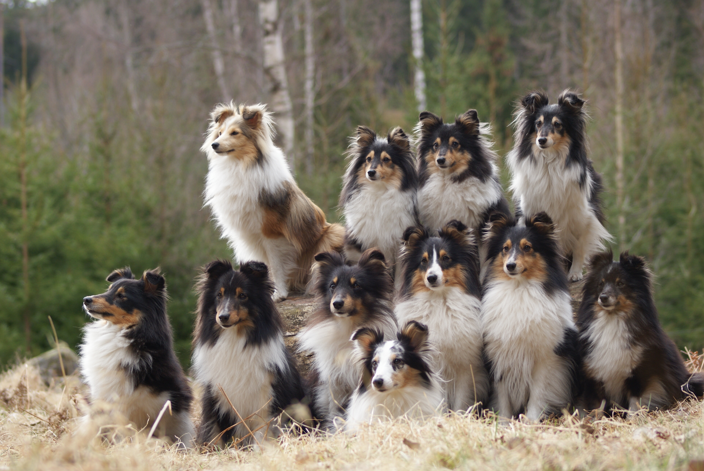

Shelties, or Shetland Sheepdogs, are a small herding breed originating from the Shetland Islands (northern Scotland). Like the Shetland pony, shelties are smaller dogs, bred to be compact and withstand the harsh island weather.
Shelties come in lots of different coat colors and markings -- sable, tricolor, biblack, and blue merle are the most common. In the photo below, there is one sable (top left), one blue merle (bottom center), and the rest are tricolor!

Photo by Jonas Löwgren
Shelties were recognized by the AKC (American Kennel Club) in 1911. Their origin is debated, some think they were crossbred with the similar looking Rough Collies, whereas others trace them back through the spitz type.
Shelties often have a white tipped tail, colloquially referred to as a shepherd's candle, referring the the fact that it can make it easy to spot the dogs in low light when they hold their tail up!
As a sheltie owner myself, I can definitely vouch for the misconception that Shelties are Collies! I often hear people calling Nimi a "mini Lassie," referring to the famous Collie known for bravery and rescuing little boys from wells (due to the SNL sketch -- this did not actually make it onto the Lassie tv show or movie series).
There are a few differences between Shelties and Collies if you know what to look for. For one, Shelties are much smaller than Collies, roughly about 1/3 the size. For another, the breed standard for Shelties is that of cocked ears (bent), while the Collie has pricked ears (upright). Nimi is a poor example of the breed standard here -- she has pricked ears. Lots of show dogs have their ears trained as a puppy to maintain this standard, done commonly with glue or tape. I chose not to train Nimi's ears when she was younger, and they've been pricked since she was six months old! The final (and in my opinion, most obvious) difference between Shelties and Collies is their snout. Shelties have a stepped snout, whereas the Collie has more of a slant. This is most obvious when looking at the dogs in profile -- if you look at a Sheltie's head, you can make out the step between their nose and the top of their head!
Shelties are very sweet and love people, but can often be skittish around new environments and other dogs.
Shelties are a very vocal breed! My roommate thinks that Nimi's one flaw is her barking -- she often has little fits where she barks out the window at passing cars. My parents' Shelties are always barking, too. Bailey, who has anxiety, will alert everyone to any little change, including someone in the family moving around in the house.
To recap, Shelties are:
This is all fun to know, but it isn't really relevant unless you are showing your dogs. Nimi is just a pet -- very unemployed. She doesn't need cocked ears!
For more information about Shelties and the breed standard, check out AKC's page about them!